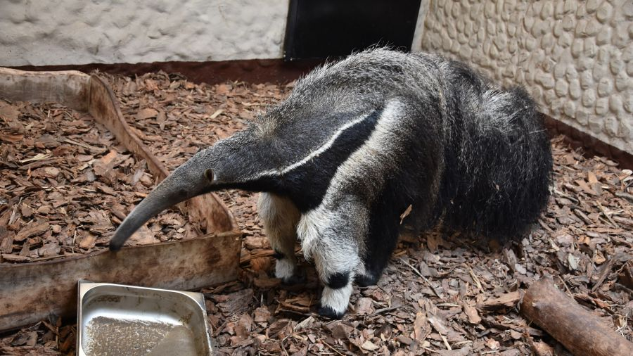

Mrówkojad Wielki
Gatunek po raz pierwszy zgodnie z zasadami nazewnictwa binominalnego opisał w 1758 roku szwedzki przyrodnik Karol Linneusz nadając mu nazwę Myrmecophaga tridactyla. Miejsce typowe według oryginalnego opisu to „Ameryka Południowa” (łac. Habitat in America meridionali), ograniczone w 1911 roku przez Oldfielda Thomasa do Pernambuco, w Brazylii. Linneusz swój opis oparł na tekstach wcześniejszych autorów. Jedyny żyjący współcześnie przedstawiciel rodzaju mrówkojad (Myrmecophaga).